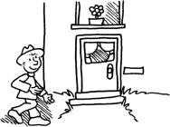

Les prépositions (Le preposizioni)
Introduzione
Le preposizioni sono parole brevi che spesso accompagnano nomi/pronomi. Essi indicano la relazione tra le parole di una frase.
Come in italiano anche in fracese esistono le preposizioni semplici (per es. à, chez) e le locuzioni preposizionali (per es. d’après, près de).
- Esempio:
- Il est allé chez le coiffeur.Lui è andato dal parrucchiere.
- Elle habite près de Bordeaux.Lei abito vicino/nei pressi di Bordeaux.
Purtroppo non tutte le preposizioni si posso tradurre letteralmente. Bisogna consultare il dizionario, leggere molto in francese e imparare nuove espressioni e vocaboli direttamente con la preposizione che li accompagna.

Simon a travaillé aujourd’hui de 8 heures à 16 heures. Après le travail, il est rentré à la maison.
Devant la porte, il a remarqué qu’il avait oublié ses clés au travail. Pour pouvoir rentrer chez lui, il va donc chercher son double de clés caché sous le pot de fleurs au-dessus de la porte à l’arrière de la maison.
Heureusement que les clés sont là! Simon peut rentrer à la maison!
Particolarità
Le preposizioni à, de e en
- Nelle enumerazioni à, de e en vengono sempre ripetuti (e non menzionati una sola volta).
- Esempio:
- Elle a donné un mouchoir à Pierre et à Zoé.Lei ha dato un fazzoletto a Pierre e a Zoé.
- Il faut de l’eau, de la farine et du sel pour faire une pâte à pizza.Servono acqua, farina e sale per fare la pasta per la pizza.
- Le preposizioni à e de seguite dall'articolo le o les si contraggono in una sola parola.
| Preposizione + articolo | Esempio |
|---|---|
| à + le = au | la glace au chocolatil gelato al cioccolato |
| à + les = aux | Fais attention aux enfants!Bada ai bambini! |
| de + le = du | parler du jeuparlare del gioco |
| de + les = des | C’est la table des enfants.Questo è il tavolo dei bambini. |
Le preposizioni avant e devant
Avant e devant hanno si traducono con "prima" però con significati diversi cioè — avant prima nel tempo, devant nel senso prima nello spazio, tradotto in italiano anche con "davanti".
- Esempio:
- Elle se brosse les dents avant d’aller se coucher.Lei si lava i denti prima di andare a dormire.
- Il attend tous les jours devant la boulangerie.Aspetta tutti i giorni davanti al panettiere.
Rischio di confondere alcune preposizioni con altre parole
Scrivendo non bisgna confondere le parole seguenti:
- à (preposizione) e a (3. persona singolare presente del verbo avoir)
- Esempio:
- Il a pris froid.Ha preso freddo./Si è raffreddato.
- Il est allé à Reims.Lui è andato a Reims.
- sur (preposizione) e sûr (aggettivo)
- Esempio:
- Il est monté sur la table pour réparer la lampe.Lui è salito sul tavolo per riparare la lampada.
- Il est sûr d’avoir réparé la lampe hier.Lui è sicuro di aver riparato la lampada.
Lista delle preposizioni francesi più imortanti
Nelle tabelle seguenti riportiamo delle informazioni sulle preposizioni francesi più importanti.
Preposizioni di tempo
| Francese | Italiano | Uso | Esempio |
|---|---|---|---|
| à | alle | per indicare l'ora | à 8 heuresalle ore 8 |
| in,nel | con la stagione primavera | au printempsin primavera | |
| per indicare secoli o epoche | au XXème sièclenel XX. secolo. | ||
| alle | in da … a … | de 8 heures à 9 heuresdalle ore 8 alle ore 9 | |
| après | dopo | dopo un determinato momento | après 8 heuresdopo le ore 8 |
| après le coursdopo il corso | |||
| avant | prima | prima di un determinato momento | avant 8 heuresprima delle ore 8 |
| avant le coursprima del corso | |||
| dans | tra | per indicazioni di tempo esatte | dans une heuretra un ora |
| de | da | in da … a … | de 8 heures à 9 heuresdalle ore 8 alle ore 9 |
| du lundi au jeudida lunedì a giovedì | |||
| depuis | da | a partire da un determinanto momento | depuis 1980dal 1980 |
| depuis 2 ansda 2 anni | |||
| dès | da | a partire da un determinanto momentovon einem bestimmten Zeitpunkt an | dès 8 heuresdalle ore 8 |
| dès lundida lunedì | |||
| en |
a in |
mesi | en févriera febbraio |
| stagioni tranne la primavera | en été, en automne, en hiverin estate, in autunno, in inverno | ||
| nel | per indicare l'anno | en 2008nel 2008 | |
| jusque | (fino) a | fino ad un determinato momento | jusqu’en févrierfino a febbraio |
| pendant | durante, per (la durata di) |
per esprimere una durata | pendant les vacancesdurante le vacanze |
| pendant trois joursper tre giorni |
Preposizioni di luogo (stato in luogo e moto in luogo)
| Francese | Italiano | Uso | Esempio |
|---|---|---|---|
| à | in, a | immobile | à la bibliothèque, au cinémain der Bibliothek, im Kino in die Bibliothek, ins Kino |
| cttà | à Parisin Paris nach Paris |
||
| nomi di paesi maschili | au Pérou, aux Etats-Unisin Peru, negli USA | ||
| à côté | accanto | accanto, vicino | Jeanne est à côté de la voiture.Jeanne è accanto alla macchina. |
| à droite | destra | su un lato (a destra) | à droite de la voiturea destra della macchina |
| à gauche | sinistra | su un lato (a sinistra) | à gauche de la voiturea sinistra della macchina |
| au-delà | al di là | al di là di un luogo | au-delà des montagnesal di là delle montagne |
| au-dessous | sotto, al di sotto | sotto ma non direttamente poggiato sotto | au-dessous de la voituresotto la macchina la la macchina |
| au-dessus | sopra, al di sopra | sopra ma non direttamente poggiato sopra | au-dessus de la voituresopra le macchina |
| à travers | attraverso | per arrivare dall'altra parte | à travers la porteattraverso la porta |
| à travers la Franceattraverso la Francia | |||
| chez | da | da una persona | chez Christopheda Christophe |
| presso | chez le coiffeur, chez le fleuristedalla parrucchiera, dalla fioraia | ||
| contre | contro | nel senso si appoggiato a |
contre la voitureappoggiato alla macchina |
| dans | in | stanza, immobile, strada, città, paese | dans la villein città |
| libro, giornale ecc. | dans le livrenel libro | ||
| mezzi di trasporto | dans le trainnel treno | ||
| mondo | dans le mondenel mondo | ||
| de | da, di | di un posto (moto da luogo) | Je viens de Paris.Vengo da Parigi. |
| derrière | dietro | dietro qualcosa | derrière la maisondietro la casa |
| en | in | nomi femminile di paesi/nazioni | en France, en Suissein Francia in Svizzera |
| en dehors | fuori | fuori/al di fuori di qualcosa | en-dehors de la maisonfuori casa |
| en face | di fronte | di fronte a qualcosa | Il habite en face de chez moi.Lui abita di fronte a me. |
| hors | fuori | fuori, lontano da un luogo | Il habite hors de la ville.Lui abita fuori città. |
| loin | lontano | lontananza | J’habite loin de la gare.Abito lontano dalla stazione. |
| par | da | attraverso qualcosa | regarder par la fenêtreguardare dalla finistra |
| près | vicino a | vicinanza | J’habite près de la gare.Abito vicino la stazione. |
| sous | sotto | direttamento sotto qualcosa | sous la tablesotto il tavolo |
| sur | su | direttamente sopra qualcosa | sur la têtesulla testa |
| su | direttamente su qualcosa | sur la tablesul tavolo | |
| vers | verso | in direzione di (ma non fino alla destinazione) | Va vers le nord!Vai verso nord. |
| vicino | vicino a … | Versailles se trouve vers Paris.Versailles si trova vicino Parigi. |
Altre preposizioni importanti
| Francese | Italiano | Uso | Esempio |
|---|---|---|---|
| à | a, da, in | mezzo, strumento | le gâteau au chocolat, la machine à laverla torta al cioccolato, la lavatrice |
| viaggiare a piedi, in bici | aller à pied, à véloa piedi, in bici | ||
| avec | con | mit jemandem | avec son chien, avec Jeancon il suo cane, con Jean |
| Art und Weise | avec joiecon gioia, volentieri | ||
| contre | contro | rifiutare | être contre une idéeessere contro un idea |
| d'après | secondo | secondo qualcuno/qualcosa | d’après le journalsecondo il giornale |
| de | di, da | - | une page du livreuna pagina del libro |
| causa, autore ecc. | un livre de Victor Hugoun libro di Victor Hugo | ||
| portatore | un cadeau de Jeanneun regalo da Jeanne | ||
| en | di | materiale | un pull en cotonun maglione di cotone |
| con, in | mezzi di trasporto (tranne la bici) | en voiture, en train, en avioncon la/in macchina, con l'/in aereo | |
| entre | tra, fra | tra due persone o oggetti menzionati | entre les arbres, entre toi et moitra gli alberi, tra te e me |
| excepté/sauf | tranne | ad eccezioni di | Tous sont venus excepté/sauf Julien.Tranne Julien sono venuti tutti. |
| grâce à | grazie a | grazie all'aiuto di qualcuno/qualcosa | Grâce à Emilie/mon ordinateur, j’ai terminé plus vite.Grazie a Emilie/al mio PC ho finito più velocemente. |
| malgré | malgrado | malgrado circostanze avverse | malgré le mauvais tempsmalgrado il mal tempo |
| par | per | mezzo, strumento, modo | par mailper e-mail |
| da | compl. ogg. nella voce passiva | La voiture est lavée par le garçon.La macchina viene lavata dal ragazzo. | |
| a | distrizuzione, intervallo | trois fois par semainetre volte a settimana | |
| parmi | tra, fra | appartenza ad un gruppo | la plus grande parmi les fillesla più grande tra le ragazze |
| pour | per | motivo | être arrêté pour volessere arrestato per furto |
per |
obiettivo, scopo | pour le travailper il lavoro | |
| destinatario | un cadeau pour mon pèreun regalo per mio padre | ||
| consenso | être pour une idéeessere per un idea | ||
| sans | senza | mancanza di persone/oggetti | sans ma valisesenza la mia valigia |
| sans mon frèresenza mio fratello | |||
| selon | a seconda di | dipendente da | selon les possibilitésa seconda delle possibilità |
| secondo | far riferimento a qualcuno/qualcosa | selon le journalsecondo il giornale |